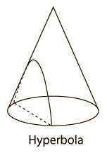
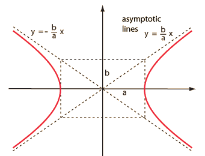

Hyperbola
|  | A hyperbola is a conic section that meets the condition that the eccentricity e>1. A hyperbola in polar coordinates has the form |
|  | In cartesian coordinates, a hyperbola centered on zero has the form
|
Another perspective of the formation of a pair of hyperbolas by sectioning the cone parallel to the axis of the cone. |
Each of the conic sections can be described in terms of a semimajor axis a and an eccentricity e. Representative values for these parameters are shown along with the types of orbits which are associated with them. |  |
| HyperPhysics*****HyperMath*****Geometry | R Nave |